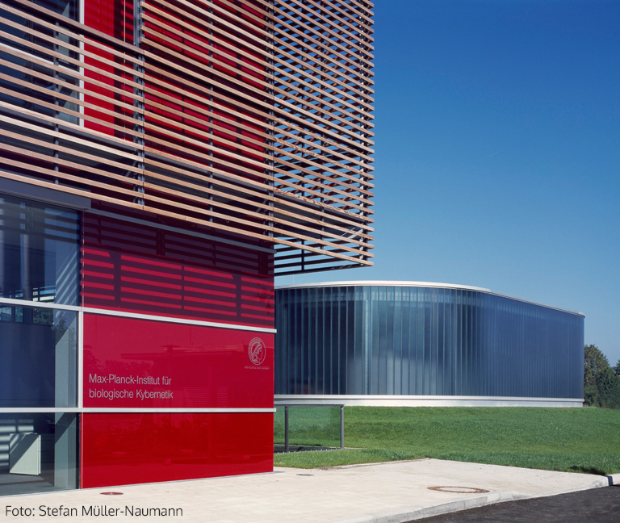

By Rabe! - Own work, CC BY-SA 3.0, https://commons.wikimedia.org/w/index.php?curid=33554043
Your job will be to play an easy and fun game that we call Roulecity.
To be eligible to participate, you MUST meet the following criteria:
18 years of age or older.
Fluent speaker of English.
Have not previously participated in this experiment.
Please use a device with a mouse or touchpad.
Please do not do this study if you are using a touch screen! It will not work!
Details
How much time will it take and how much can you earn?
The study will take 10-15 minutes.
You will be paid £ 1.50 for participation plus a bonus of up to £ 3.00 depending on your performance.
Hence, the expected payment is something around £ 3.00 to £ 4.50.
Confidentiality
Your participation in this study will remain confidential.
Your Prolific worker ID will NOT be shared with anyone outside the research team.
Participation and withdrawal
Your participation in this study is completely voluntary and you may refuse to participate
or you may choose to withdraw at any time.
However, you will only be paid for the participation upon completion
and if you enter the correct completion code to Prolific (provided at the end of the study).
How to contact the researchers
If you have questions or concerns about your participation or payment
or want to request a summary of research findings,
please email the researcher
or the principal investigator (Dr. Eric Schulz).
Data protection
Your data will be anonymized and only used in the manner described in our data protection sheet,
available here
(please do not fill out this sheet!).
The following text box summarizes the main points. Please read it carefully and provide consent below:
By selecting the consent option below,
you acknowledge that you fulfill all of the participation criteria
and you agree to your data being used as described.